오스트리아 빈, 역사·건축·미술로 더 잘 이해하기
600년을 이어 온 합스부르크 제국의 수도, 빈. 화려한 궁전과 성당 뒤에는 개혁군주와 명장, 그리고 "삐까번쩍한 제국"의 빛과 그림자가 함께 숨어 있습니다. ICRA 학회 틈틈이 도시를 거닐 때 알아두면 좋은 이야기들을 모았습니다.
마리아 테레지아 & 요제프 2세 — 오스트리아의 "세종대왕"
우리에게 세종대왕이 있다면, 오스트리아에는 이 모자(母子)가 있습니다.
마리아 테레지아(재위 1740–1780)는 합스부르크 영토를 다스린 유일한 여성 군주였습니다. 무려 16명의 자녀를 두었고, 그중 막내딸이 프랑스로 시집간 그 유명한 마리 앙투아네트입니다. 그의 아들 요제프 2세(단독 통치 1780–1790)는 교과서에 나오는 "계몽 절대군주"의 대표 사례입니다.
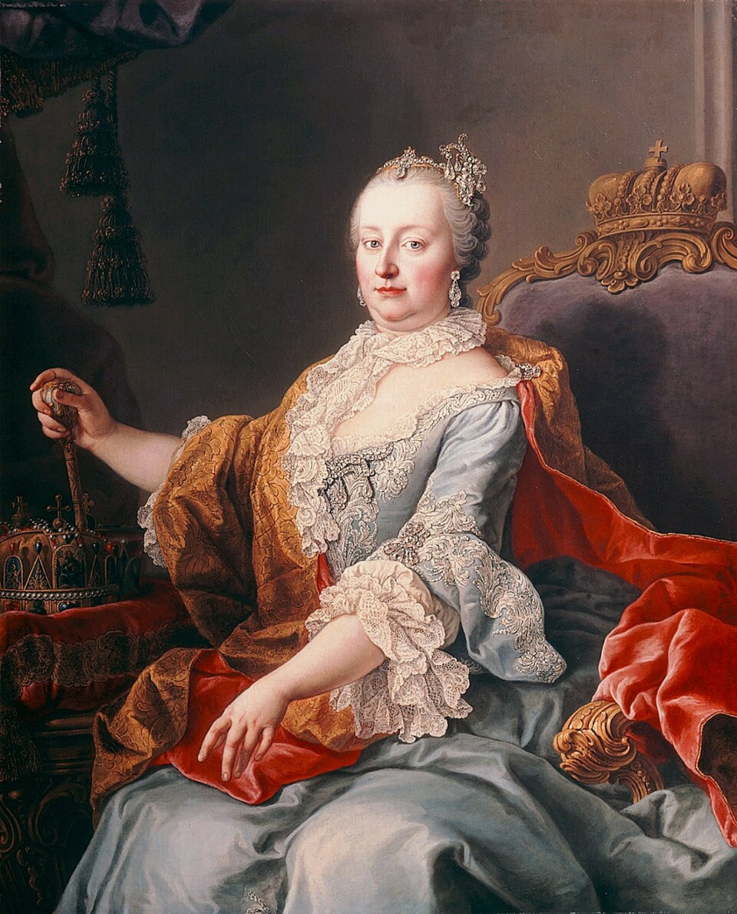
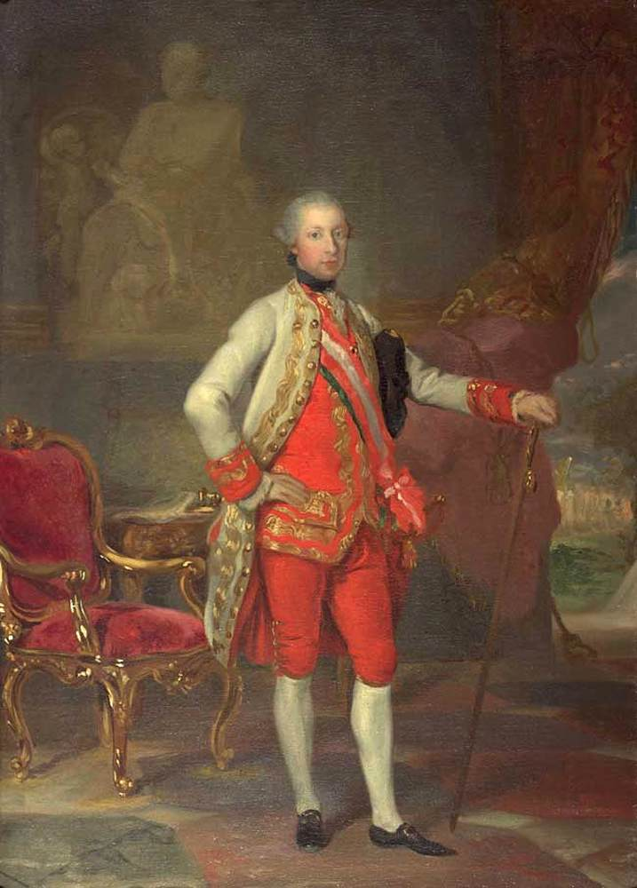
왜 "세종대왕급"이라 부를 만한지, 이들이 남긴 개혁을 보면 알 수 있습니다.
- 의무교육의 씨앗 — 1774년 일반학교령으로 국가 주도 초등교육 체계 도입
- 종교 관용 — 1781년 관용 칙령(개신교·정교회), 1782년 유대인 관용 칙령으로 제한적 신앙의 자유 허용
- 농노의 권리 확대 — 1781년 농노 패텐트로 결혼·이주·직업 선택의 자유 부여 (농노제 전면 폐지는 1848년)
- 공공의료 — 1784년 빈 종합병원(Allgemeines Krankenhaus) 설립, 훗날 "손 씻기 혁명"의 무대
오이겐 · 카를 · 슈바르첸베르크 · 라데츠키
제국을 지킨 네 명의 명장. 빈 곳곳에서 이들의 이름과 동상을 만나게 됩니다.
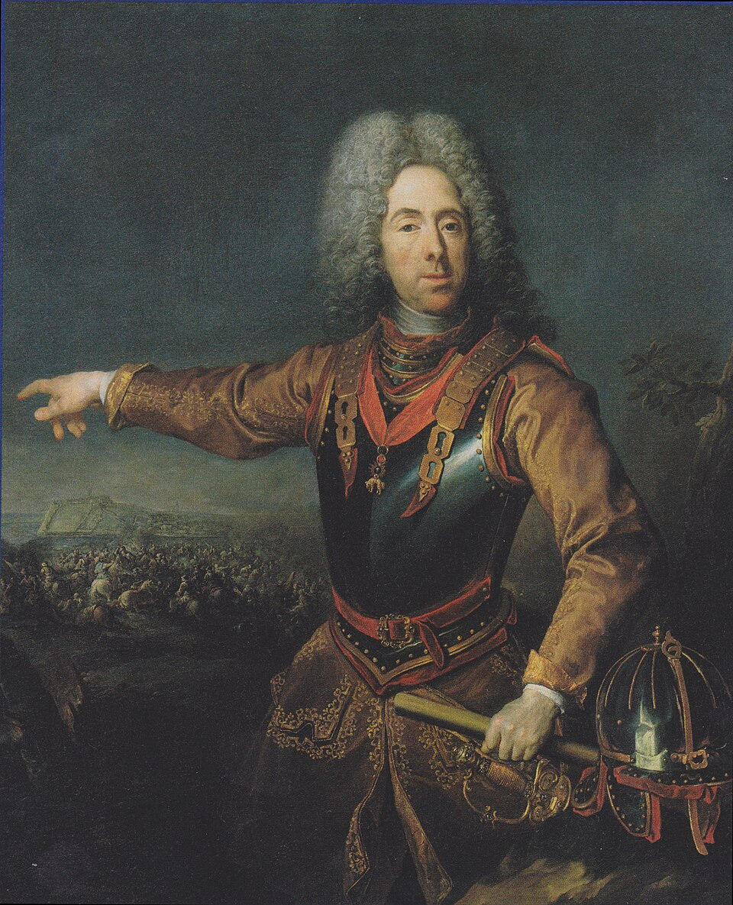
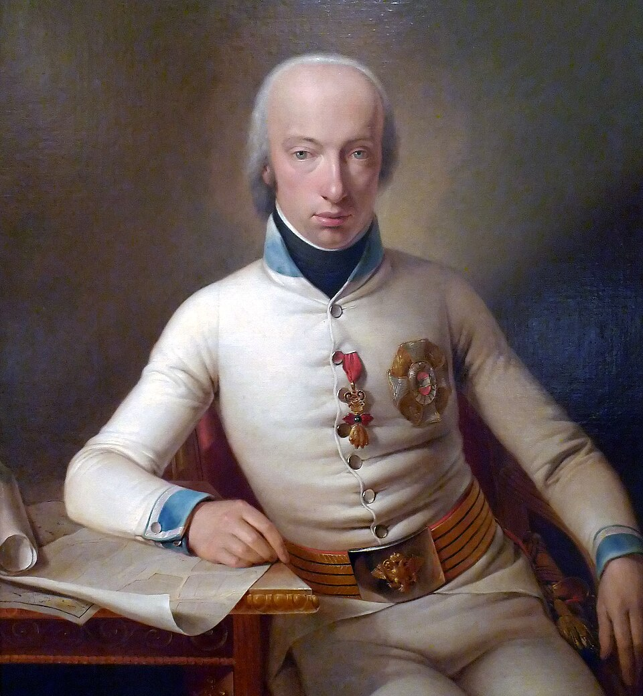
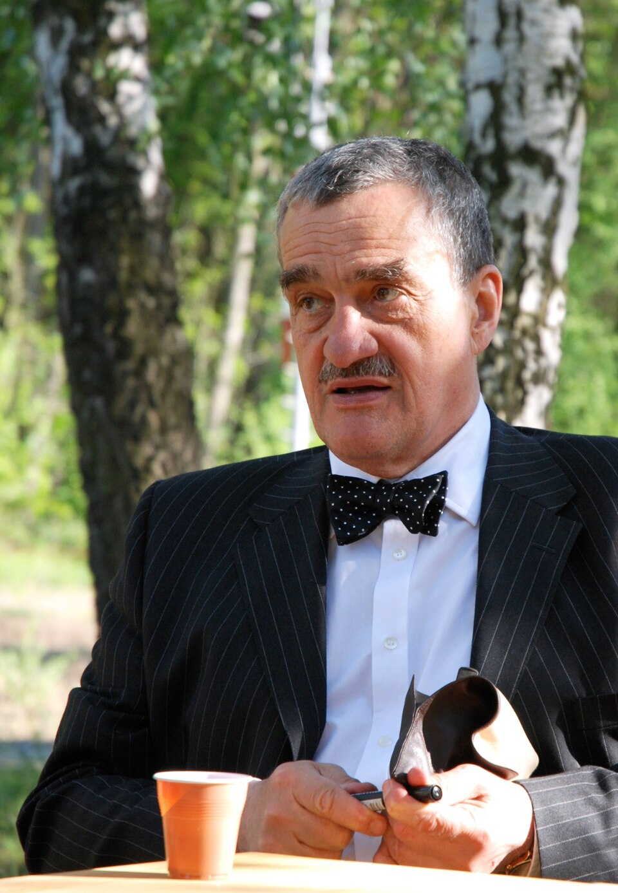
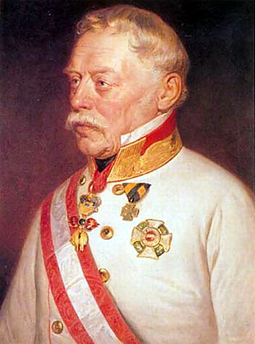
- 사보이아의 오이겐 공(Prinz Eugen) — 합스부르크 최고의 명장. 약 50년간 제국군을 이끌며 오스만 제국을 격파했습니다(1697 젠타, 1717 베오그라드 등). 뒤에 나올 벨베데레 궁전의 주인이기도 합니다.
- 카를 대공(Erzherzog Karl) — 1809년 아스페른-에슬링 전투에서 나폴레옹에게 첫 의미 있는 패배를 안긴 인물로 유명합니다.
- 슈바르첸베르크 공 — 1813년 라이프치히 "제국민 전투"에서 연합군 총사령관으로 나폴레옹을 무너뜨렸습니다. (도심의 슈바르첸베르크 광장이 그의 이름을 땄습니다 — 마지막 탭의 소련군 기념비가 있는 바로 그 광장!)
- 라데츠키 원수 — 신년이면 전 세계가 듣는 바로 그 "라데츠키 행진곡"의 주인공입니다.
네 장군 중 오이겐 공과 카를 대공은 헬덴광장(영웅 광장)에 거대한 기마상으로 서 있습니다. "호프부르크 & 헬덴광장" 탭에서 자세히.
성 슈테판과 성 레오폴드 — "돌 맞은 사람"과 "성당을 든 사람"
성화·조각 속 인물을 알아보는 작은 팁.
- 성 슈테판(St. Stephen) — 기독교 최초의 순교자. 돌에 맞아 순교했기에, 보통 손이나 어깨 위에 돌을 든 젊은 부제(副祭)의 모습으로 그려집니다. 빈의 상징 성 슈테판 성당이 바로 이 성인에게 봉헌되었습니다.
- 성 레오폴드 3세(St. Leopold) — 오스트리아의 수호성인. 자신이 세운 클로스터노이부르크 수도원을 손에 든 "성당(건물) 모형을 든 사람"으로 그려지는 것이 특징입니다.
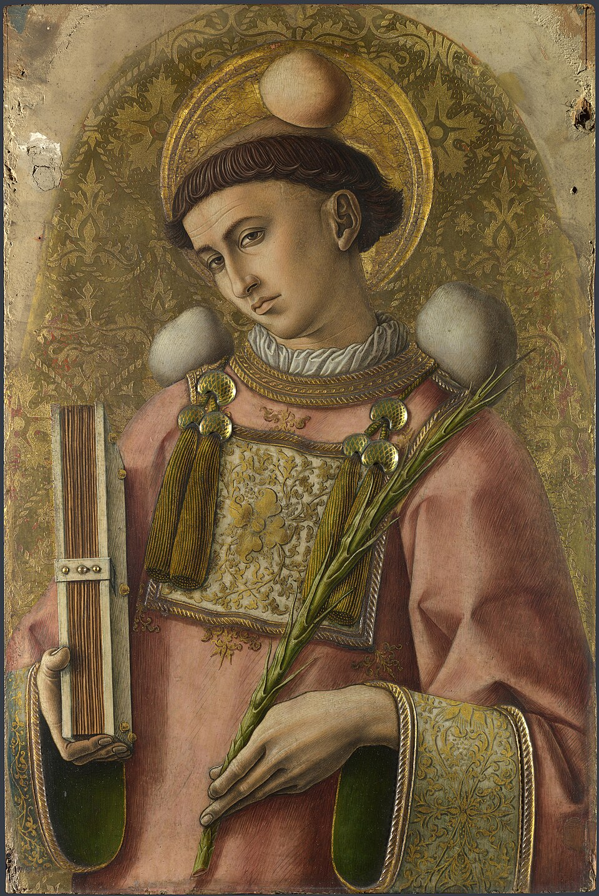
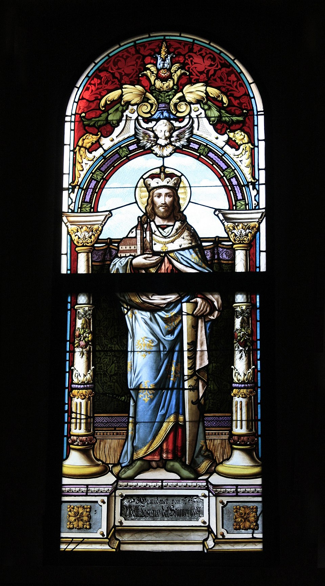
"성당 모형을 든 사람"의 정체, 컬러 지붕의 비밀까지 — 성당 탭에서 사진과 함께 부분부분 살펴봅니다.
쌍두독수리 — 머리가 둘 달린 독수리의 뜻
궁전 문장, 성당 지붕, 옛 동전까지 빈 곳곳에서 만나는 그 새.
빈을 돌아다니다 보면 머리가 둘 달린 독수리를 자주 만나게 됩니다. 이것은 합스부르크 왕가와 신성로마제국의 상징입니다. 신성로마제국은 중세부터 1806년까지 중부 유럽에 존재한 가톨릭 제국으로, 합스부르크 가문이 오랫동안 그 황제 자리를 차지했습니다.
머리가 둘인 데에는 뜻이 있습니다. 동쪽과 서쪽을 함께 굽어본다는 의미, 즉 온 (기독교) 세계를 아우르는 보편적 지배권을 나타냅니다. 머리 위에 얹힌 황제관과, 때때로 머리 둘레를 감싸는 후광은 "교황에게 축성받은 신성한 황제"라는 권위를 상징합니다.
독수리가 쥐고 있는 물건들도 그냥 장식이 아니라, 황제의 권능을 나타내는 상징물(레갈리아)입니다.
- 검(劍) — 군사력과, 죄를 심판하는 정의의 권한.
- 홀(笏, 지팡이 모양) — 나라를 다스리는 통치권.
- 보주(寶珠, orb) — 십자가가 얹힌 둥근 황금 구슬. 둥근 구슬은 "세계", 그 위의 십자가는 "그리스도"를 뜻합니다. 즉 "그리스도가 온 세상을 다스리고, 황제는 그 대리자로서 세상을 다스린다"는 선언입니다.
성 슈테판 성당 남쪽 지붕에는 이 쌍두독수리가 색타일로 거대하게 그려져 있습니다.
고딕 · 바로크 · 로코코, 한눈에 구분하기
빈 시내를 가득 채운 바로크, 그 화려함에는 이유가 있습니다.
① 고딕 vs 바로크
고딕(Gothic)은 하늘을 찌를 듯 높이 솟은 첨탑과 뾰족한 아치가 특징인 중세 양식입니다. 빈에서는 성 슈테판 성당이 대표적인 고딕 건축입니다. 반면 빈 시내를 채운 건물 대부분은 바로크(Baroque) 양식입니다. 성 페터 성당이나 성 카를 성당처럼 둥근 돔, 굽이치는 곡선, 황금빛 장식, 천장을 가득 메운 그림(프레스코)으로 보는 사람을 압도하는 것이 바로크입니다.
② 바로크 vs 로코코
바로크가 무르익은 뒤 18세기에 나타난 로코코(Rococo)는, 바로크의 웅장함을 좀 더 가볍고 우아하며 아기자기한 쪽으로 발전시킨 양식입니다. 묵직한 금빛과 어두운 색 대신, 흰색과 연분홍 같은 파스텔 톤의 벽에 가늘고 비대칭적인 곡선 장식을 얹는 것이 특징입니다.
빈에서 로코코는 주로 쇤부른 궁전 내부의 방들에서 만날 수 있습니다. 마리아 테레지아 시대에 꾸며진 이 방들은 흰 바탕에 금빛·파스텔 장식이 어우러진 우아한 로코코의 전형입니다.
실제 건물에서 두 양식을 직접 비교해 보세요.
화려한 제국의 빛과 그림자, 그리고 프로이트
"세기말 빈(Vienna 1900)" — 인류 지성사의 폭발이 일어난 도시.
20세기 초의 빈은 묘한 도시였습니다. 겉으로는 링슈트라세의 웅장한 건물, 황실, 오페라로 삐까번쩍했지만, 안으로는 다민족 제국의 정치 불안과 사회적 억압, 막연한 불안감이 들끓고 있었습니다. 이 긴장이 오히려 모더니즘의 폭발로 이어졌습니다. 미술에서는 클림트와 실레, 음악에서는 말러, 철학에서는 비트겐슈타인, 그리고 인간의 무의식을 파헤친 지그문트 프로이트가 모두 이 시기 빈에 모여 있었습니다.
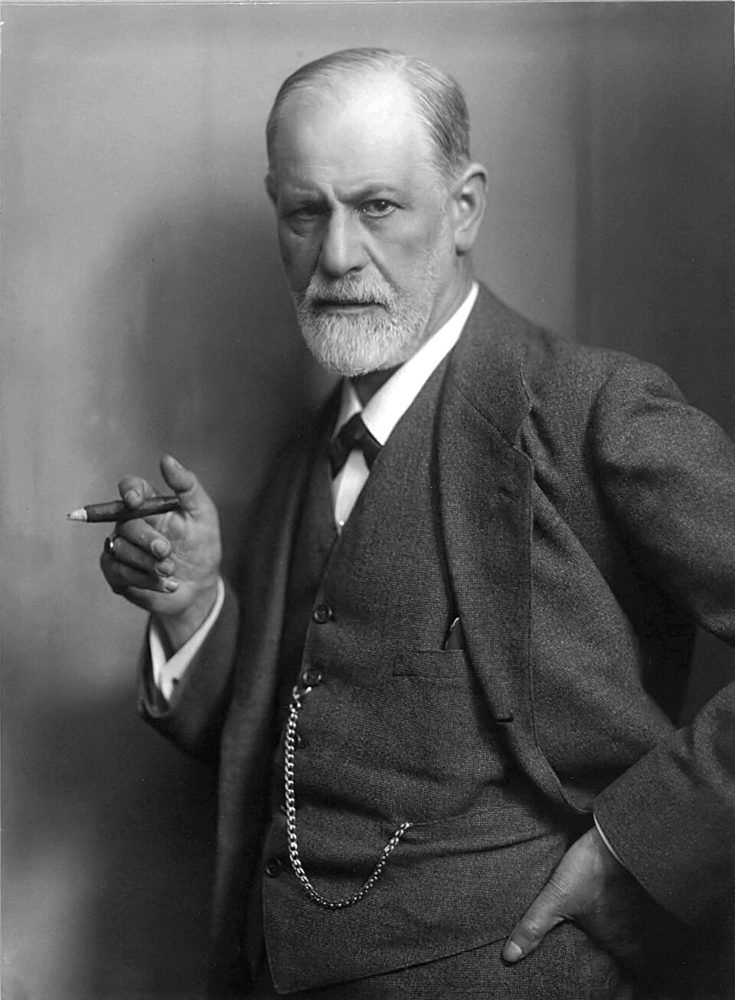
제국의 황금빛 외관과 내면의 불안 사이에서 태어난 분리파(제체시온) 이야기는 벨베데레 탭에서.
감자, 천연두 백신, 그리고 "손 씻기"
바로 다음 단락에서 볼 "빈 인구 10배 폭증"의 출발점. 사람이 덜 죽기 시작했습니다.
다음 단락에서 보겠지만, 빈의 인구는 19세기를 거치며 약 20만 명에서 약 200만 명으로, 한 세기 만에 거의 열 배로 불어납니다. 이렇게 사람이 늘어난 데에는 외부에서 일자리를 찾아 몰려든 이주도 컸지만, 근본적으로는 "사람이 예전만큼 쉽게 죽지 않게 된" 변화가 있었습니다. 그 변화를 만든 세 가지를 살펴봅니다.
🥔 감자의 보급
감자는 18세기 후반, 즉 마리아 테레지아·요제프 2세 시대를 거치며 합스부르크 영토의 주식으로 자리 잡았습니다. 처음엔 귀족·수도원의 정원에서 키우는 진귀한 작물이었지만, 7년 전쟁(1756–63) 같은 전란과 기근을 겪으며 값싸고 수확량 많은 구황작물로 빠르게 퍼졌습니다.
💉 천연두와의 싸움
천연두는 황실조차 피하지 못한 공포였습니다. 1767년 마리아 테레지아 본인이 천연두에 걸렸고, 같은 해 딸 마리아 요제파를 잃었습니다. 회복한 그는 인두법(제너의 백신이 나오기 전, 천연두를 일부러 약하게 앓게 해 면역을 얻던 초기 접종법)을 적극 후원해, 1768년 빈에서 접종을 받은 아이들을 위해 직접 만찬을 베풀기도 했습니다.
🧼 제멜바이스의 손 씻기 혁명
가장 극적인 이야기입니다. 의사 이그나츠 제멜바이스는 빈 종합병원 산과 병동에서, 부검을 마친 의사들이 그대로 분만실로 와 산모를 진료하는 것이 산욕열의 원인임을 알아챘습니다. 1847년, 그는 의료진에게 표백분(염소 소독액)으로 손을 씻게 했고, 산모 사망률은 약 12%에서 1~2%로 급락했습니다.
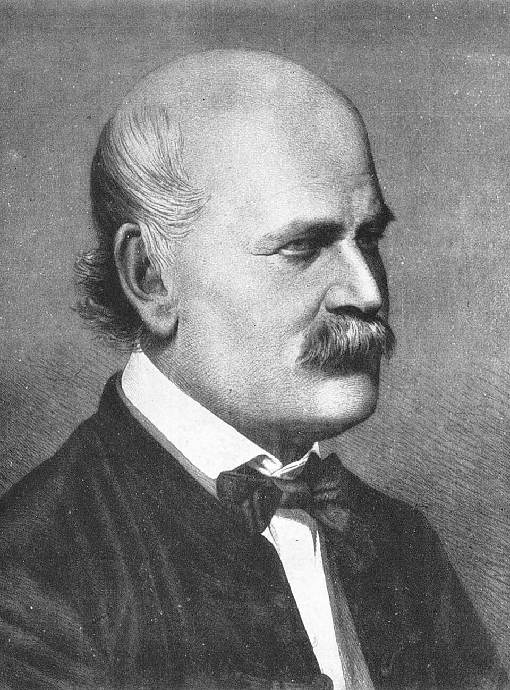
비더마이어 — 영웅 대신 "평범한 일상"을 그린 시대
미술관에서 "이 시대 그림은 왜 다 소박할까?" 싶을 때 떠올리면 좋은 키워드.
비더마이어(Biedermeier)는 나폴레옹 전쟁이 끝난 1815년(빈 회의)부터 1848년 혁명까지, 오스트리아를 비롯한 중부 유럽에 퍼진 시대이자 양식입니다. 핵심 배경은 메테르니히 체제의 강력한 검열과 정치적 억압이었습니다. 클레멘스 폰 메테르니히는 나폴레옹 몰락 후 빈 회의(1815)를 주도해 유럽의 보수적 질서를 설계한 오스트리아의 재상으로, 검열과 비밀경찰로 자유주의적 변화를 억눌렀던 인물입니다(결국 1848년 혁명으로 실각합니다). 이렇게 공적인 정치 활동의 길이 막히자, 시민(중산층)들은 대신 가정·가족·일상이라는 사적인 세계로 눈을 돌렸습니다.
그 결과 문화 전반이 아늑하고 실용적인 쪽으로 기울었습니다. 가구와 실내는 군더더기 없이 편안하게, 그리고 미술은 왕·영웅·신화·거대한 역사 대신 평범한 사람들의 일상, 가족, 시골 풍경, 정물 같은 "일반적인 것들"을 따뜻하고 꼼꼼하게 그리게 되었습니다.
이 시대의 대표 화가 발트뮐러의 그림은 벨베데레에 가장 풍부하게 모여 있습니다.
20만에서 200만으로 — 10배 팽창이 낳은 도시 문제
알프스에서 물까지 끌어와야 했던 이유.
이것이 핵심입니다. 1800년에 약 20만 명이던 빈의 인구는 1900년 무렵 약 200만 명으로, 한 세기 만에 거의 열 배로 불어났습니다(앞 단락의 공중보건 발전으로 사망률이 낮아진 데다, 일자리를 찾아 사람들이 몰려든 결과입니다). 도시 하나가 이렇게 빠르게 부풀면, 도시가 감당해야 할 문제도 함께 폭증합니다.
겉으로 빈은 화려했습니다. 황제 프란츠 요제프는 옛 도시 성벽을 허물고, 그 자리를 따라 도심을 빙 두르는 폭넓은 순환 대로 링슈트라세(Ringstraße, "링 도로")를 만들었습니다. 이 대로변에 국회의사당·시청·궁정오페라극장·박물관 같은 웅장한 건물이 줄지어 들어서며 19세기 후반 빈의 화려한 얼굴이 되었습니다. 하지만 그 번쩍이는 외관 뒤에는 그늘이 짙었습니다.
- 극심한 주택난 — 몰려든 노동자들은 비좁은 셋방에 빽빽이 살았고, 방값을 아끼려 하루 중 정해진 시간에만 남의 침대를 빌려 자는 "침대 세입자(Bettgeher)"까지 생겼습니다.
- 오염된 물과 전염병 — 우물물이 오염되면서 콜레라 같은 수인성 전염병이 반복적으로 도시를 덮쳤습니다. 1873년 만국박람회가 열린 해에는 콜레라 유행과 주식시장 대폭락(Gründerkrach)까지 겹쳤습니다.
해결책은 과감했습니다. 알프스의 깨끗한 샘물을 도시로 끌어오는 것. 1873년 개통한 제1 빈 고지대 샘물 수도는 라엑스·슈네베르크 산지의 샘에서 약 95km를, 펌프 하나 없이 중력만으로 빈까지 물을 보냈습니다. 덕분에 깨끗한 식수가 공급되며 전염병이 크게 줄었고, 이 위업을 기념하는 상징물이 바로 슈바르첸베르크 광장의 호흐슈트랄 분수입니다.
분수가 높이 물을 뿜는 이유, 그리고 그 뒤의 소련군 기념비 이야기는 분수 탭에서.
제국의 붕괴에서 "오스트리아는 자유다!"까지
빈 곳곳의 기념물을 이해하려면 이 격동의 흐름을 알아두면 좋습니다.
- 1914 · 1차 세계대전 발발 — 도화선은 오스트리아 황태자 프란츠 페르디난트 부부가 사라예보에서 암살된 사건이었습니다. 오스트리아-헝가리 제국은 독일과 함께 '동맹국'으로 참전했습니다.
- 1918 · 제국의 붕괴 — 패전과 함께 600년을 이어 온 합스부르크 제국이 무너졌습니다. 거대한 다민족 제국은 여러 나라로 쪼개졌고, 오스트리아는 독일어권만 남은 작은 공화국으로 축소되었습니다.
- 전후 처리 — 독일은 베르사유 조약, 오스트리아는 생제르맹 조약(둘 다 1919년)으로 전후 질서가 정해졌습니다. 두 조약 모두 독일과 오스트리아의 합병(안슐루스)을 금지했지만, 양국 모두 극심한 경제난과 정치 혼란을 겪었습니다.
- 1938 · 안슐루스 — 결국 나치 독일이 오스트리아를 병합합니다. 히틀러는 이를 헬덴광장에서 선언했습니다.
- 1945 · 다시 분할 점령 — 2차대전이 끝나자 오스트리아는 미국·소련·영국·프랑스 4개국에 의해 10년간 분할 점령되었습니다.
- 1955 · 독립과 중립 — 5월 15일 상부 벨베데레 궁전에서 국가조약이 서명되며 점령이 끝나고 독립을 되찾았습니다. 외무장관 피글의 "오스트리아는 자유다!(Österreich ist frei!)"가 이때 나왔습니다. 이어 10월 26일, 의회가 헌법으로 영세중립을 선언했고 이 날이 지금의 국경일입니다.
- 헬덴광장 — 1938년 안슐루스 선언의 현장
- 상부 벨베데레 — 1955년 국가조약 서명, 독립 회복
- 슈바르첸베르크 광장 소련군 기념비 — 1945년 점령의 흔적
안슐루스가 선언된 그 발코니와 광장 이야기는 호프부르크 탭에서.
벨베데레 궁전
명장이 지은 여름 궁전이, 세기말 빈 미술의 보물창고가 되기까지.
명장 오이겐 공의 여름 별궁
벨베데레는 인트로에 등장한 사보이아의 오이겐 공이 자신의 여름 별궁으로 지은 바로크 궁전입니다. 건축가는 요한 루카스 폰 힐데브란트. 사적 거처인 하궁(下宮)과 성대한 행사를 여는 상궁(上宮, 1723년 완공)이 정원을 사이에 두고 마주 봅니다.

오늘날 벨베데레는 오스트리아를 대표하는 미술관입니다. 특히 상궁은 세계 최대 규모의 구스타프 클림트 컬렉션을 소장하고 있습니다.
클림트의 "키스(Der Kuss)"
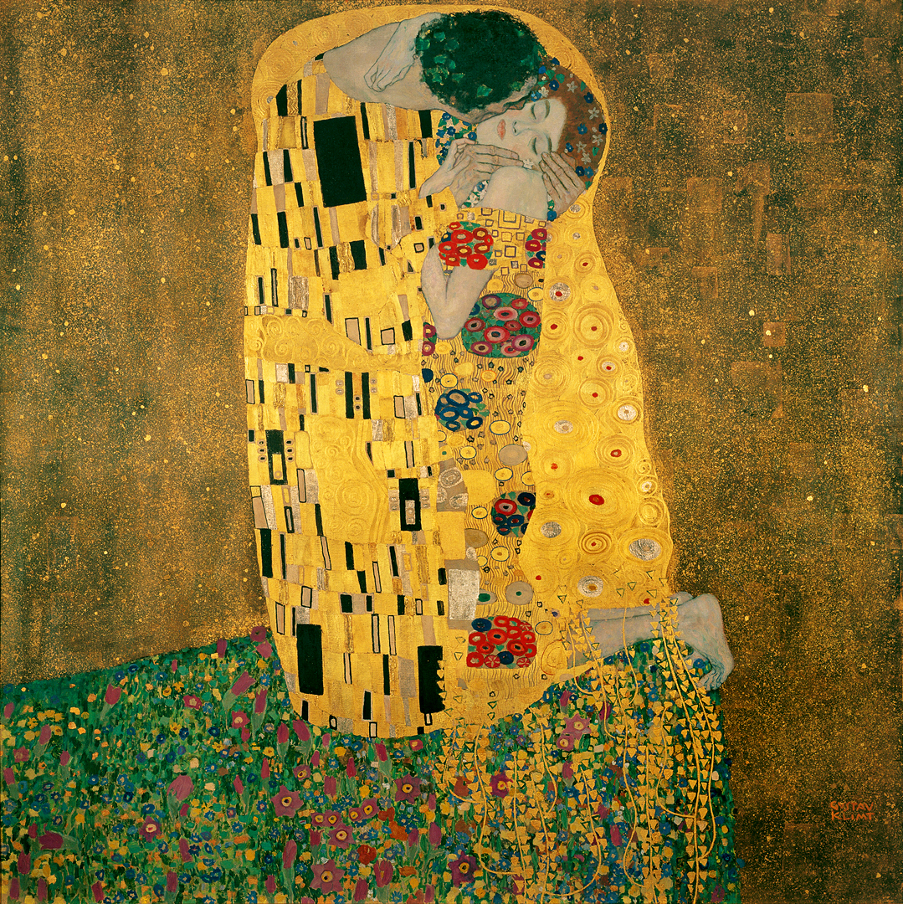
실물은 금박을 직접 붙여, 빛을 받으면 화면이 실제로 반짝입니다(인쇄물로는 느낄 수 없는 부분). 두 인물을 감싼 금빛 망토 속 네모(남성)와 동그라미·꽃(여성) 무늬의 대비도 가까이서 살펴보세요. 상부 벨베데레 2층에 걸려 있습니다.
벨베데레로 읽는 200년 — 그림의 주인공은 어떻게 바뀌었나
한 미술관을 시대순으로 거닐다 보면, 화가들이 "무엇을 그렸는가"가 통째로 바뀌는 흐름이 눈에 들어옵니다.
- 제국의 시대 — 황제·신화·자연경관. 바로크부터 19세기 초까지의 그림은 황제와 제국의 영광, 종교·신화의 거대한 장면, 그리고 웅장한 풍경(자연경관)이 주인공이었습니다. 한마디로 "위대함"을 보여주는 그림입니다.
- 비더마이어(1815–1848) — 평범한 일상으로. 검열의 시대에 사람들이 사적인 세계로 눈을 돌리면서, 그림의 주인공도 영웅에서 평범한 가족·아이·시골 풍경 같은 일상의 것들로 내려옵니다. 대표 화가는 발트뮐러입니다.
- 세기말 분리파 & 상징주의(~1900) — 내면의 욕망. 화려한 제국 뒤에 곪아 있던 사회의 종합적인 모순 속에서, 화가들은 눈에 보이는 현실 대신 인간 내면의 욕망·죽음·무의식을 그리기 시작합니다. 이때 핵심이 상징주의(Symbolism)입니다. 사물을 사실 그대로가 아니라 상징과 알레고리로 표현해, 그 뒤에 감춰진 관념과 감정을 드러내는 방식입니다. 클림트의 금빛 화면과 우의적 인물들이 대표적입니다.
- 1차 대전 이후(1914~) — 추상으로. 1차 세계대전(1914–18)의 참혹함을 겪으며, 미술가들은 아름다운 표면을 버리고 인간의 불안과 고통을 날것 그대로, 더 추상적으로 드러내는 표현주의로 나아갑니다. 벨베데레에서는 에곤 실레, 오스카어 코코슈카 같은 화가들의 일그러지고 강렬한 작품에서 그 변화를 확인할 수 있습니다.
왜 갑자기 "욕망"을 그렸을까 — 분리파(Secession)의 탄생
금빛 그림 뒤에는 세기말 빈의 긴장이 흐릅니다.
인트로에서 본 "빈 1900"의 분위기를 떠올려 보세요. 겉은 화려하지만 속은 불안했던 제국. 1897년, 클림트를 초대 회장으로 한 젊은 예술가들이 보수적인 미술 아카데미에서 "분리(Secession)"를 선언하며 뛰쳐나옵니다. 이들은 낡은 권위 대신 에로스(욕망)·죽음·무의식 같은 인간 내면의 진실을 화폭에 담으려 했습니다.
같은 시기 같은 도시에서 프로이트가 무의식을 분석하고 있었다는 점을 떠올리면, 클림트의 금빛 관능과 에곤 실레의 불안한 신체가 왜 그때 그곳에서 터져 나왔는지 자연스럽게 이해됩니다. 제국의 "삐까번쩍함"과 내면의 억압, 그 둘 사이의 긴장이 바로 빈 모더니즘의 연료였던 셈입니다.
이 긴장의 큰 그림은 인트로 탭 "빈 1900" 단락에서.
화려한 그림 뒤, 19세기 빈의 어두운 사회사
벨베데레의 비더마이어 전시실에는 의외로 무거운 패널들이 함께 걸려 있습니다.
금빛 클림트와 정겨운 비더마이어 그림만 보면 19세기 빈이 평화로워 보이지만, 같은 미술관이 그 이면의 빈곤층 현실도 함께 보여 줍니다.
- 결혼은 모두의 권리가 아니었다 — 19세기 오스트리아에서 노동자·하인·견습공·빈민은 결혼하려면 "가족을 부양할 능력이 있는가"를 시청에서 심사받아 허가를 받아야 했습니다. 능력이 없다고 판단되면 결혼 자체가 불허되었습니다(가난한 사람이 늘면 구빈 비용이 는다는 이유였습니다).
- 혼외 출산의 급증 — 결혼은 막았지만 사랑과 출산까지 막지는 못했습니다. 그 결과 빈에서는 혼외 출산이 폭발적으로 늘었고, 그 대가는 대부분 여성과 아이들이 치렀습니다.
- 기아 보호소와 아동 노동 — 요제프 2세가 1784년에 세운 산원·기아 보호소(Foundling Hospital)에서는 익명 출산이 가능했습니다. "아이를 버리거나 죽이느니 국가가 맡자"는 취지였지만, 맡겨진 아이들 상당수는 국가 보조금과 값싼 노동력을 노린 위탁가정으로 보내져 어린 나이부터 사실상 노동에 동원되기도 했습니다.
인구 폭증과 도시 문제의 큰 그림은 인트로 탭에서.
쇤부른 궁전
"오스트리아의 베르사유" — 합스부르크 황실의 여름 거처.
마리아 테레지아의 여름 궁전
쇤부른은 합스부르크 황실의 여름 거처로, 주로 마리아 테레지아 시대(1740–50년대)에 건축가 니콜라우스 파카시의 손을 거쳐 지금의 모습을 갖췄습니다. 방이 무려 1,441개에 달하며, 1996년 유네스코 세계유산에 등재되었습니다.
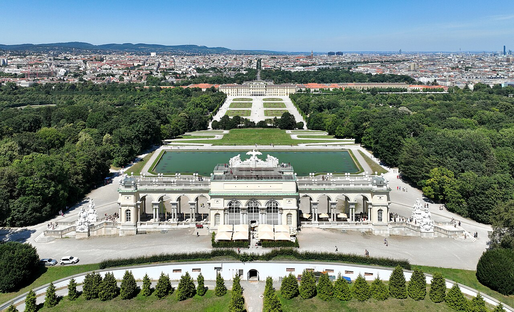
거울의 방, 그리고 여섯 살 모차르트
1762년 10월, 여섯 살의 모차르트가 이 궁전의 거울의 방(Spiegelsaal)에서 마리아 테레지아와 황실 가족 앞에서 연주했다는 일화는 유명합니다. 연주를 마친 어린 모차르트가 황녀 마리 앙투아네트에게 "커서 결혼하자"고 했다는 귀여운 전설도 전해집니다.
언덕 위의 글로리에테
정원 끝 언덕에는 1775년에 세워진 개선문 형태의 글로리에테(Gloriette)가 있습니다. 이곳에서 내려다보는 궁전과 빈 시내 전망이 일품입니다.
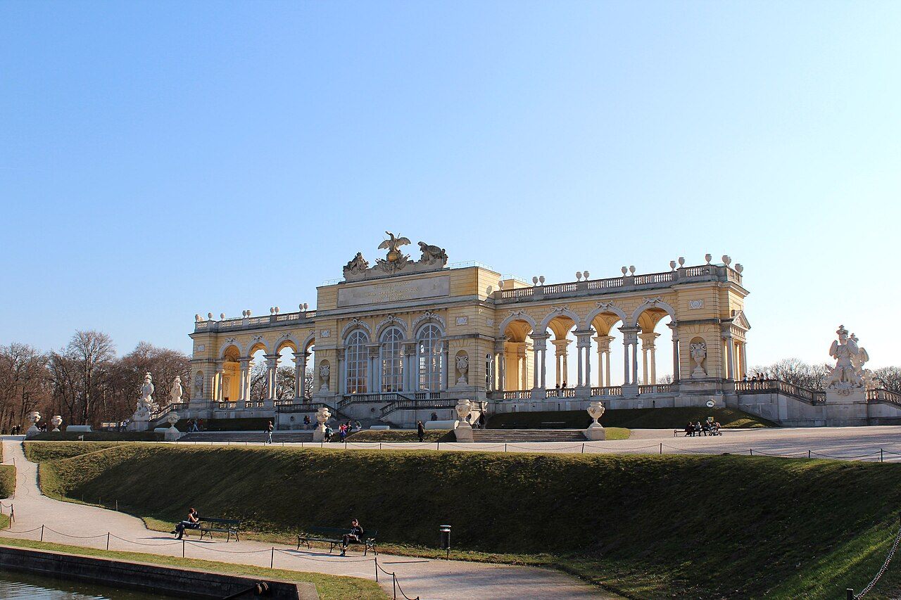
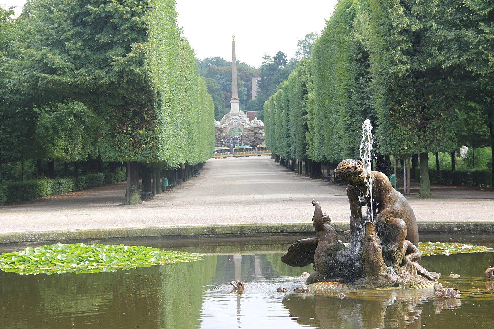
궁전 내부에서는 흰 바탕에 금빛 장식이 어우러진 로코코 양식의 방들(인트로 "건축으로 읽는 빈" 참고)을, 정원에서는 언덕 위 글로리에테까지 걸어 올라가 궁전과 빈 시내가 한눈에 들어오는 전망을 챙기세요.
성 슈테판 성당 (Stephansdom)
빈의 심장. 사진을 부분부분 뜯어보며 "투어"해 봅니다.
23만 장의 타일이 그린 그림
성당에서 가장 먼저 눈에 띄는 것은 알록달록한 지붕입니다. 약 23만 장의 유약 타일이 모자이크 무늬를 이룹니다. 가파른 지붕은 바닥에서 약 38m 높이로 솟아 있습니다.
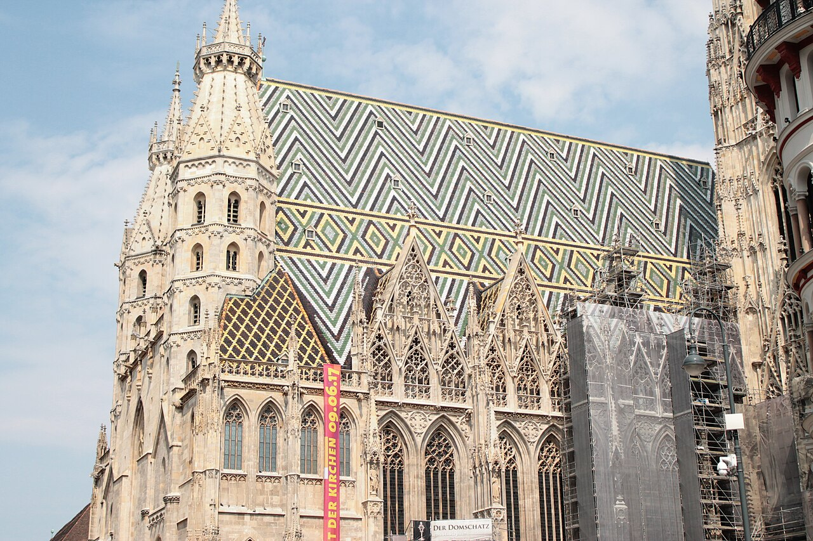
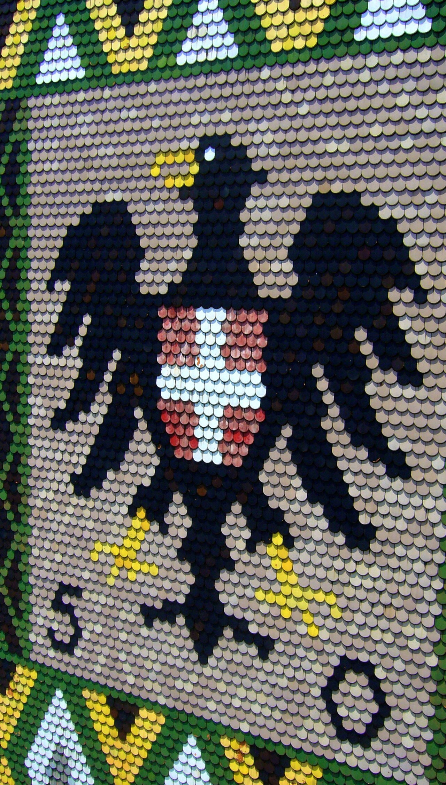
남쪽 지붕에는 합스부르크 제국의 쌍두독수리가, 북쪽 지붕에는 빈 시와 오스트리아 공화국의 문장(외머리독수리)이 타일로 그려져 있습니다. 한 지붕에 제국의 과거와 공화국의 현재가 함께 새겨진 셈입니다.
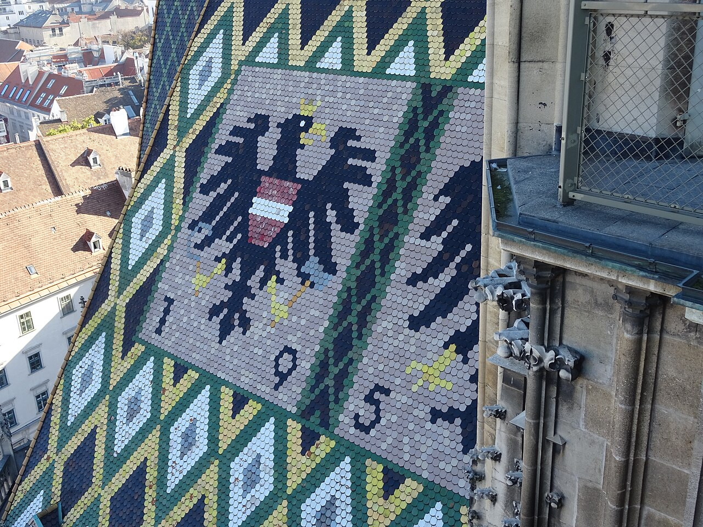
지붕은 방향을 보고 구분하세요. 남쪽(슈테판 광장 쪽)에는 머리가 둘 달린 합스부르크 쌍두독수리가, 북쪽에는 머리가 하나인 빈 시·오스트리아 공화국 문장이 있습니다. (쌍두독수리의 의미는 인트로 "합스부르크의 상징"에서.)
슈테플(남탑)과 거대한 종 푸머린
남탑은 빈 사람들이 애칭으로 "슈테플(Steffl)"이라 부르는 약 136m 높이의 첨탑입니다. 1368년부터 1433년까지 무려 65년에 걸쳐 세워졌고, 전망대까지 343개의 계단을 걸어 오를 수 있습니다.
한편 북탑에는 오스트리아에서 가장 큰 종 푸머린(Pummerin)이 걸려 있습니다. 1951년에 주조된 이 종은 무게가 약 20톤에 달하며, 매년 12월 31일 자정 새해를 알리는 종소리로 유명합니다.
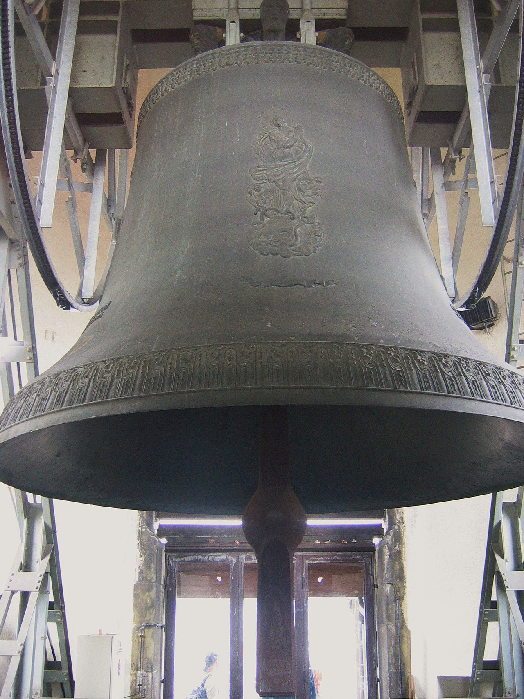
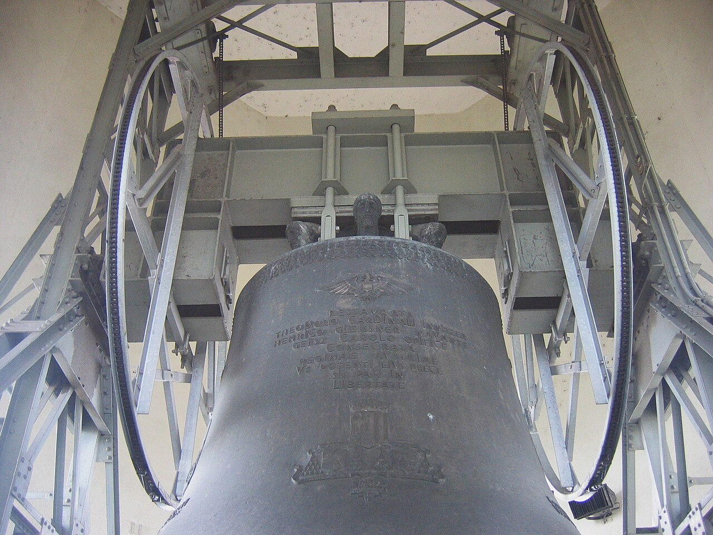
거인의 문(Riesentor)과 "성당을 든 사람"의 정체
서쪽 정면의 거인의 문(Riesentor)은 1230년대의 로마네스크 양식 정문입니다. 문 위 반원(팀파눔)에는 천사들에게 둘러싸인 전능하신 그리스도(판토크라토르)가 새겨져 있습니다. "거인의 문"이라는 이름은 1443년 북탑 터를 파다 발견된 큰 뼈(매머드 뼈)를 문 위에 걸어둔 데서 유래했다는 설이 있습니다.
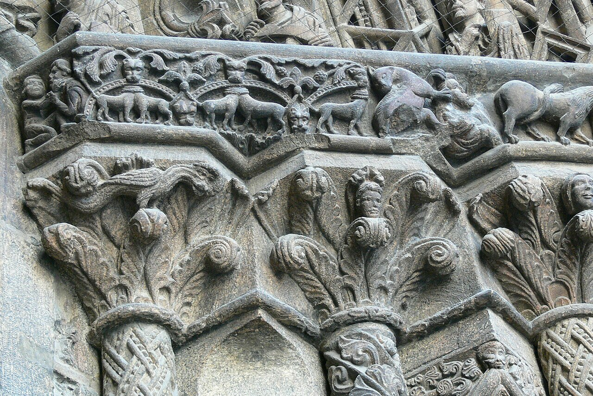
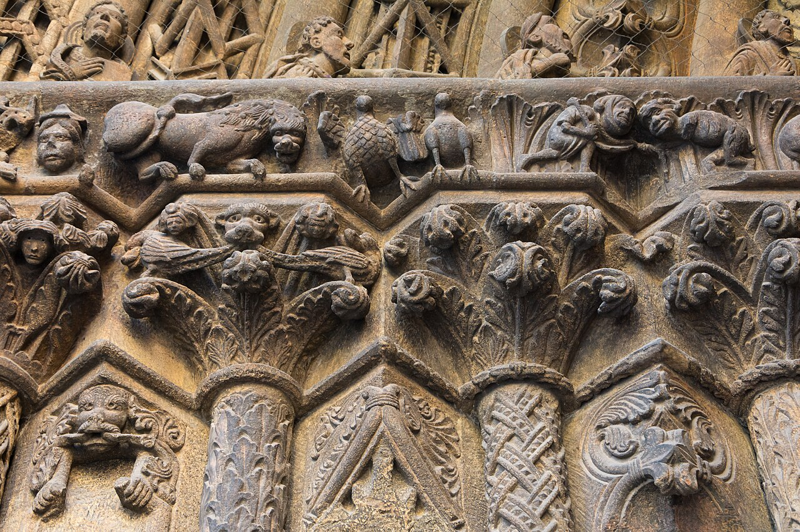
카타콤 — 1만 명이 잠든 지하 묘지
성당 지하에는 1만 명 이상의 유해가 안치된 카타콤이 있습니다. 1735년 도심 묘지가 페스트로 폐쇄되면서 이곳으로 뼈가 옮겨졌고, 고딕 성당의 초석을 놓은 "창건자" 루돌프 4세도 여기에 잠들어 있습니다. 가이드 투어로만 입장할 수 있습니다.
성 페터 성당 (Peterskirche)
번화가 그라벤 뒤에 숨은, 황금빛 바로크의 보석함.
그라벤 한 발짝 뒤, 초록빛 돔
성 페터 성당은 빈의 번화한 보행거리 그라벤 바로 옆 페터 광장에 자리합니다. 이 자리에 성당이 있었다는 기록은 1137년까지 거슬러 올라가지만, 지금의 바로크 성당은 1701년경 착공해 1703년 요한 루카스 폰 힐데브란트(벨베데레를 지은 그 건축가!)가 이어받아 1733년에 봉헌했습니다. 레오폴트 1세 황제가 1679년 페스트 종식을 기원하며 세운 서원과 연결됩니다.
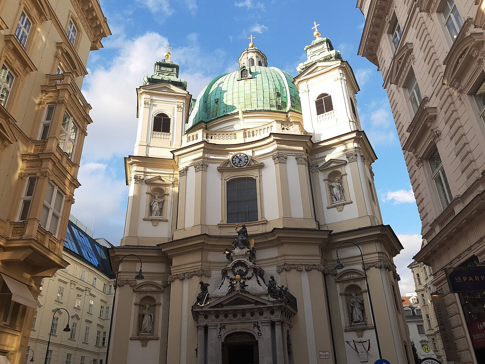
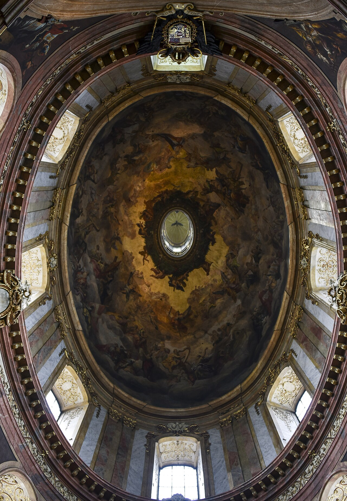
황금빛 본당과 천장 프레스코
작은 입구를 지나 안으로 들어서면, 좁은 외관과 대비되는 화려한 황금빛 바로크 내부가 펼쳐집니다. 천장의 타원형 돔에는 화가 요한 미하엘 로트마이어(Johann Michael Rottmayr)가 1713–1715년에 그린 「성모 대관(聖母戴冠)」 프레스코가 가득 차 있습니다. 로트마이어는 17세기 말~18세기 초에 활동한 오스트리아 바로크 천장화(프레스코)의 선구자로, 빈을 비롯한 합스부르크 영토 곳곳의 성당 천장을 채운 거장입니다.
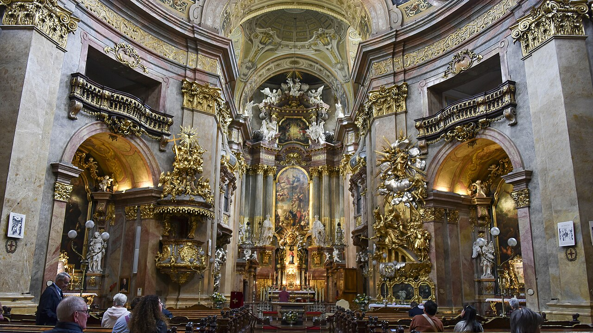
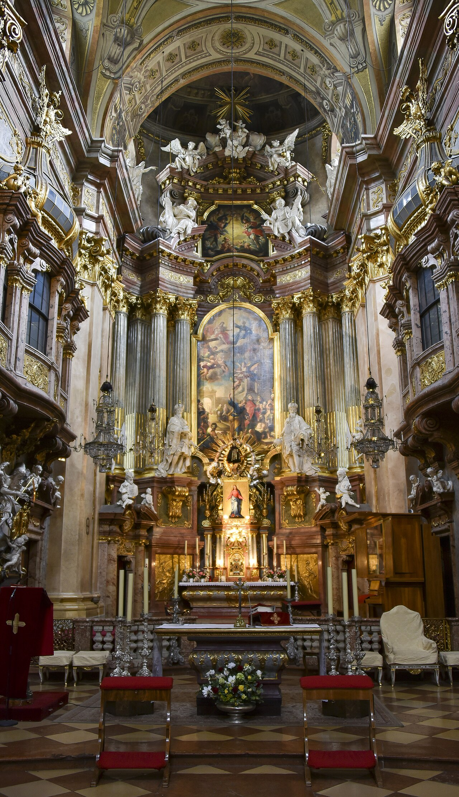
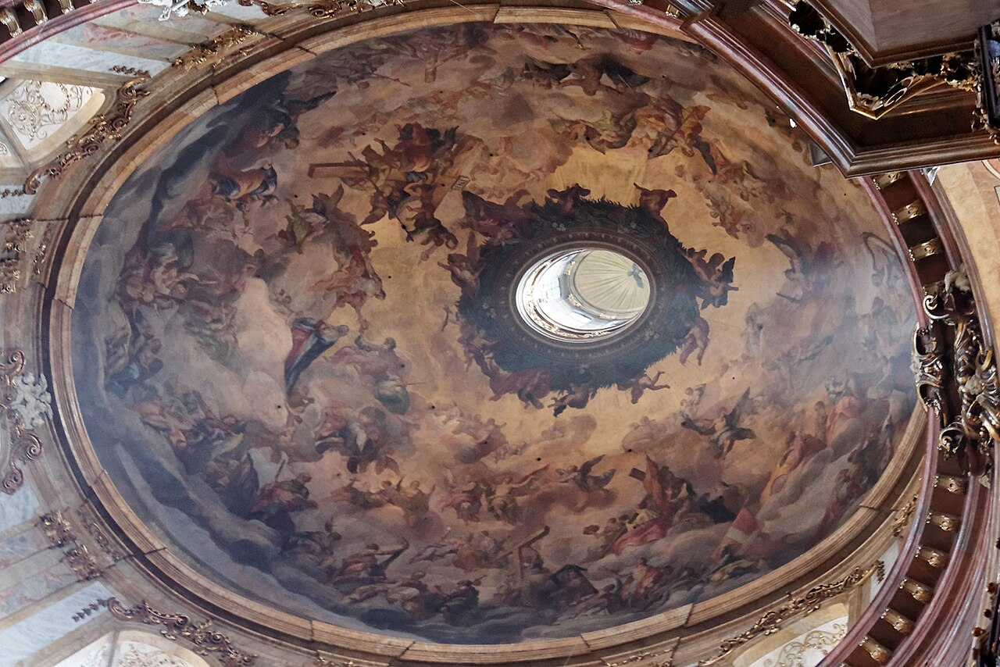
천장과 제단에 숨은 신학 — 삼위일체와 "신의 이름"
바로크 성당은 그림 하나하나가 눈으로 읽는 신학입니다.
① 삼위일체(三位一體)
기독교의 핵심 교리인 삼위일체(성부·성자·성령이 한 하느님)가 이 성당 곳곳에 그려져 있습니다. 천장 돔의 「성모 대관」은 삼위일체가 성모 마리아에게 관을 씌우는 장면이고, 돔 꼭대기의 작은 채광탑에는 성령을 뜻하는 비둘기가, 화려한 설교단(pulpit) 위에도 삼위일체상이 얹혀 있습니다.
② 히브리어로 쓴 "신의 이름"
중앙 제단 위쪽, 빛이 폭발하듯 뻗어 나오는 영광의 빛(Glorie) 안을 보면 히브리어 네 글자가 빛납니다. 이는 구약에 나오는 하느님의 이름 "야훼(YHWH)"를 적은 것으로(흔히 '테트라그람마톤'이라 부릅니다), 예수가 아니라 '하느님(성부)' 그 자체를 가리킵니다. 같은 모티프를 다음 탭의 성 카를 성당에서 더 큼직하게 만날 수 있습니다.
③ 성모 마리아
원래 중앙 제단에는 은으로 만든 감실(성체를 모시는 함)이 있었지만 나폴레옹 전쟁 때 소실되었고, 지금 그 자리에는 「원죄 없는 마리아(Maria Immaculata)」 그림과 15세기 자비의 옥좌(성부가 십자가에 달린 성자를 안고 성령 비둘기가 함께하는, 삼위일체를 한 화면에 담은 도상)가 놓여 있습니다.
중앙 제단 위 영광의 빛 속 히브리어 네 글자를 찾아보세요. "예수"가 아니라 하느님의 이름(야훼)입니다. 이어서 돔 꼭대기의 성령 비둘기까지 확인하면 삼위일체가 한눈에 들어옵니다.
성 카를 성당 (Karlskirche)
두 개의 거대한 기둥을 거느린, 빈 바로크의 정점.
페스트가 멈추기를 빌며 세운 성당
1713년, 빈을 휩쓴 마지막 대규모 페스트가 잦아들자 황제 카를 6세는 감사의 서원으로 이 성당의 건립을 약속했습니다. 자신의 수호성인이자 페스트 치유의 성인으로 추앙받던 성 카를로 보로메오에게 헌정했습니다. 건축가는 빈 바로크의 거장 요한 베른하르트 피셔 폰 에를라흐. 1716년 착공해, 그의 사후 아들이 이어받아 1737년 완성했습니다.
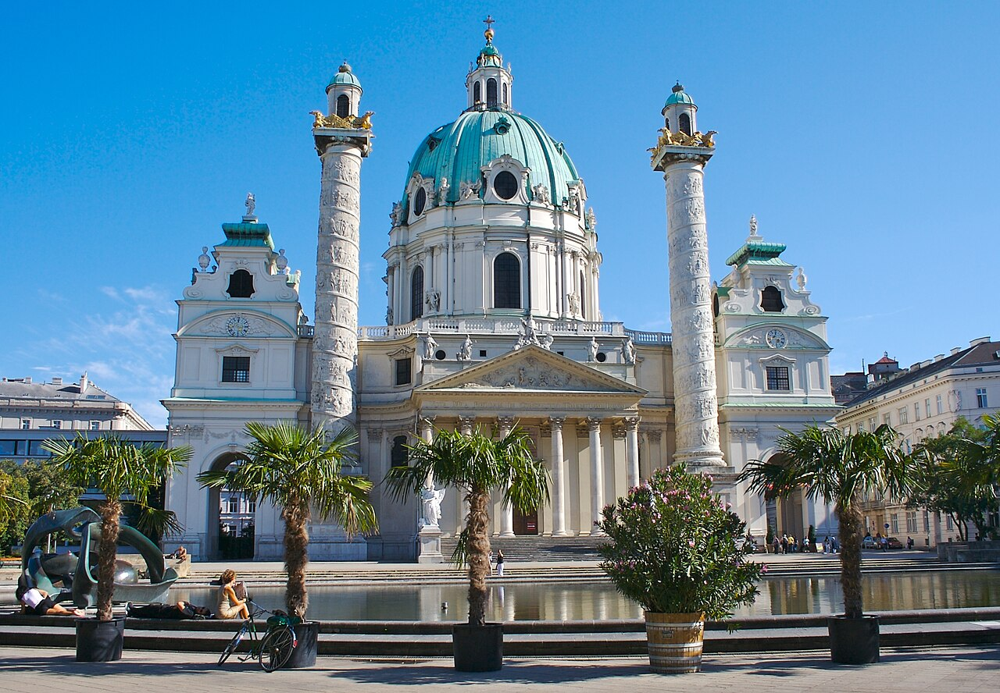
로마에서 가져온 아이디어 — 트라야누스 기둥
이 성당의 가장 독특한 점은 입구 양옆에 우뚝 선 두 개의 거대한 기둥입니다. 이는 로마의 트라야누스 기둥에서 따온 것으로, 표면의 나선형 부조에는 성 카를로 보로메오의 생애가 새겨져 있습니다. 한 성당에 신전(현관)·기념기둥(로마)·돔(르네상스)이 한데 모인, 일종의 "건축 백과사전"인 셈입니다.
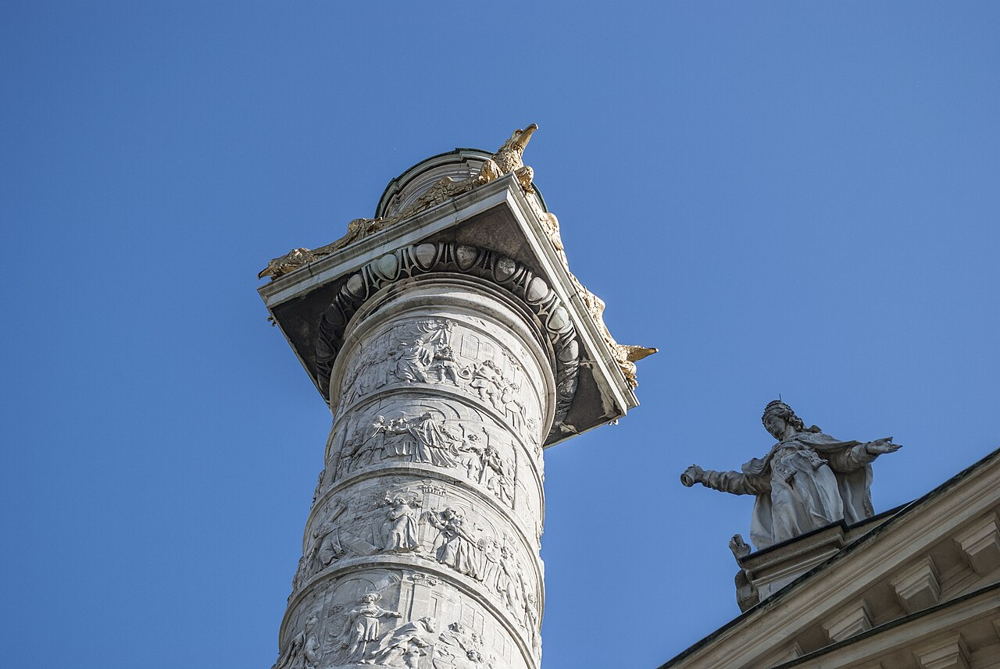
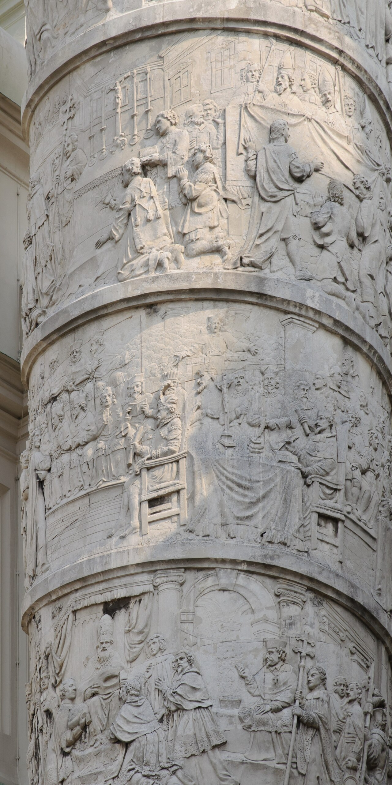
약 70m 돔, 그리고 앞마당의 현대 조각
내부로 들어가면 약 70m 높이의 타원형 돔이 압도합니다. 천장에는 요한 미하엘 로트마이어(Johann Michael Rottmayr)의 거대한 프레스코가 펼쳐져, 성 카를로 보로메오가 성모의 도움으로 중재하는 장면을 담았습니다(약 1,250㎡!). 로트마이어는 오스트리아 바로크 천장화의 선구자로, 성 페터 성당의 돔 천장화도 그의 작품입니다.
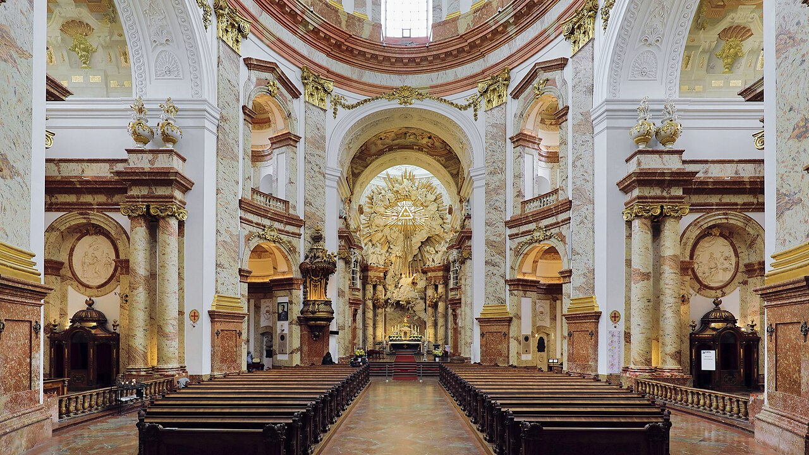
제단 위 "삼위일체의 빛"
중앙 제단 위쪽을 보면, 황금빛 영광의 빛(Glorie) 한가운데 둥근 채광창이 있고 그 안에 히브리어 네 글자(야훼, YHWH)가 빛납니다. 삼각형(삼위일체)과 사방으로 뻗는 빛으로 표현되는 이 모티프는 하느님(성부)을 상징하며, 따뜻한 노란빛은 '하느님의 사랑'을 나타냅니다. 성 페터 성당에서 본 "신의 이름"과 같은 모티프이며, 이곳에서는 실제 햇빛이 그 글자를 통과해 들어오도록 설계되었습니다.
성당 앞 연못에는 영국 조각가 헨리 무어의 청동 조각 「Hill Arches」(1978년 설치)가 놓여 있습니다. 300년 된 바로크 파사드와 현대 추상조각이 물 위에서 대화하는, 빈다운 장면입니다.
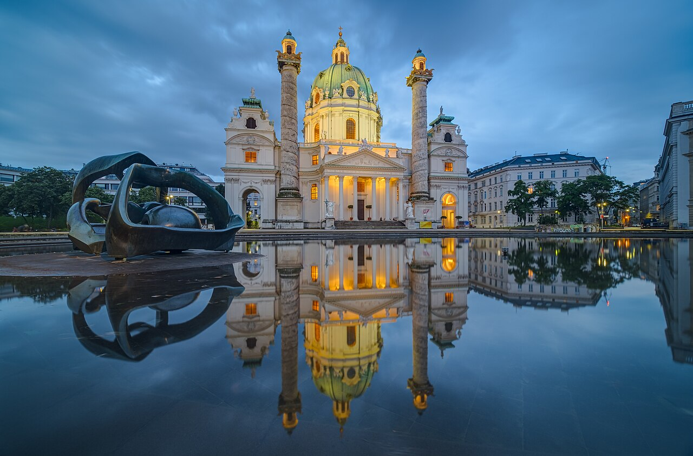
세 가지를 놓치지 마세요. ① 입구 두 기둥의 나선 부조(성 보로메오의 생애), ② 제단 위 영광의 빛 속 히브리어 "야훼", ③ 앞 연못의 헨리 무어 조각. 로마·바로크·현대미술이 한자리에 모입니다.
호흐슈트랄 분수 & 소련군 전쟁기념비
엄청 큰 분수, 그리고 그 뒤에 선 거대한 병사.
슈바르첸베르크 광장의 호흐슈트랄 분수
"엄청 큰 분수"의 정체는 슈바르첸베르크 광장(인트로의 그 장군 이름!)에 있는 호흐슈트랄 분수(Hochstrahlbrunnen)입니다. 그런데 이 분수는 그냥 멋으로 만든 게 아닙니다. 1873년, 황제 프란츠 요제프가 제1 빈 고지대 샘물 수도(Erste Wiener Hochquellenwasserleitung)의 개통을 기념해 이 분수를 처음 틀었습니다.
당시 빈은 인구가 폭발하면서 우물물이 오염돼 콜레라 같은 수인성 전염병에 시달리고 있었습니다(아래 인트로 링크 참고). 해결책은 알프스의 깨끗한 샘물을 끌어오는 것이었습니다. 라엑스·슈네베르크 산지의 샘에서 약 95km 떨어진 빈까지, 펌프 하나 없이 오직 높이 차(중력)만으로 물을 흘려보내는 대공사였습니다. 호흐슈트랄 분수가 그렇게 높이 물을 뿜어 올릴 수 있는 것도, 바로 이 알프스 샘물의 자연 수압을 그대로 보여주기 위함이었습니다.
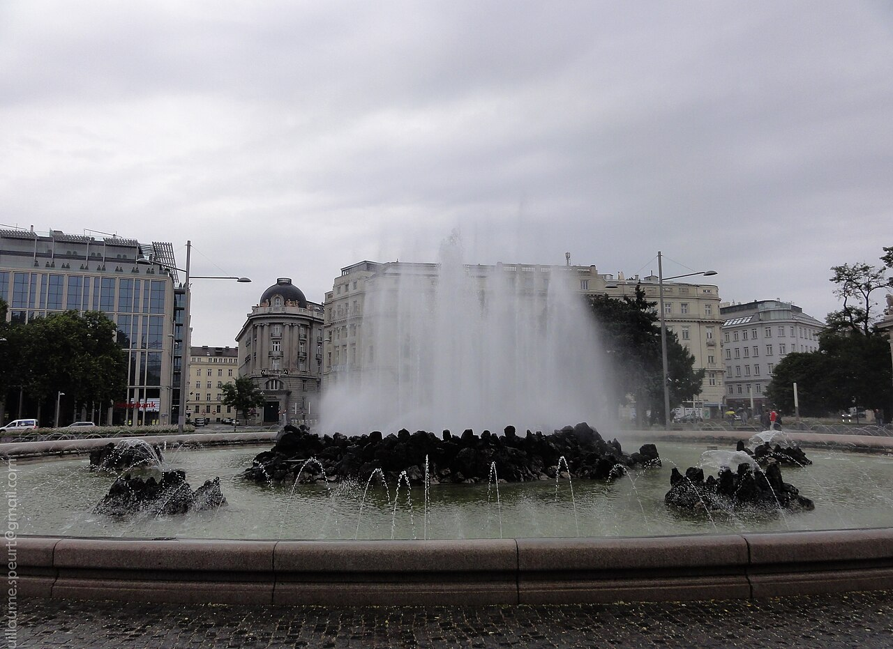
왜 알프스에서 물까지 끌어와야 했는지 — 급팽창하던 빈의 위생·콜레라 이야기는 인트로 탭에서.
붉은군대 영웅 기념비
분수 뒤에 반원형 기둥(콜로네이드)에 둘러싸여 우뚝 선 약 12m 높이의 병사상이 바로 붉은군대 영웅 기념비(Heldendenkmal der Roten Armee), 흔히 "러시아인 기념비(Russendenkmal)"라 불리는 조형물입니다. 2차대전 막바지 1945년 빈 공방전에서 전사한 소련군(약 1만 7천 명으로 전해짐)을 기립니다. 1945년 8월 19일 제막되었습니다.
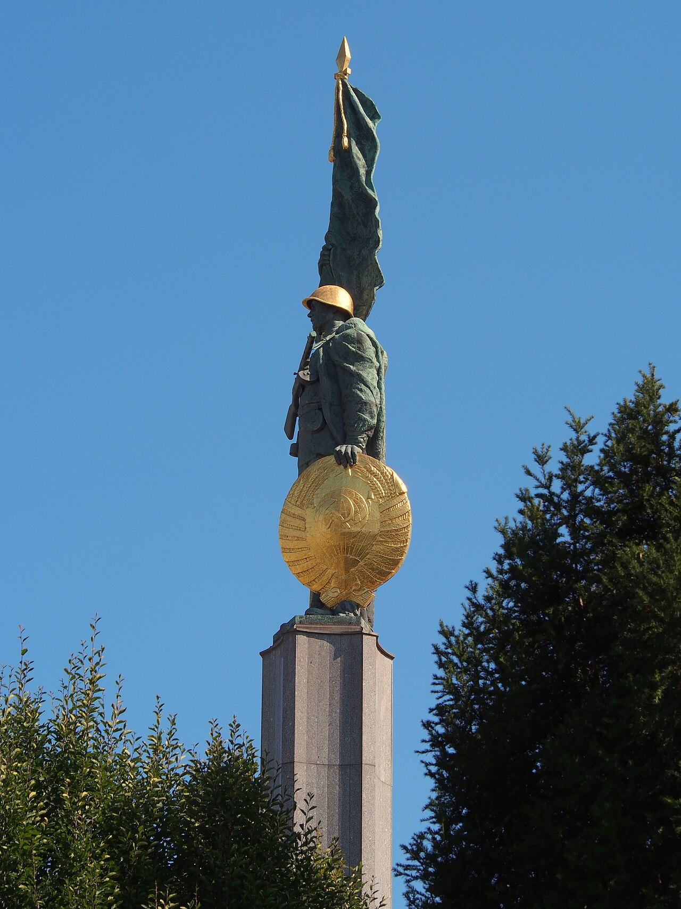
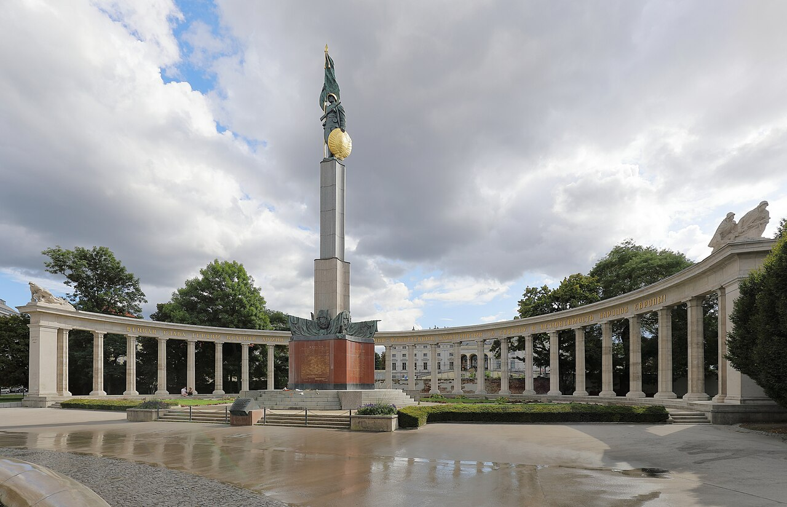
흥미로운 점은 기념비가 분수 바로 뒤에 의도적으로 배치되어, 정면에서 보면 콜로네이드가 분수를 끌어안는 듯한 한 장면으로 합쳐진다는 것입니다. 그래서 "분수 + 군인"이 늘 한 컷에 담깁니다.
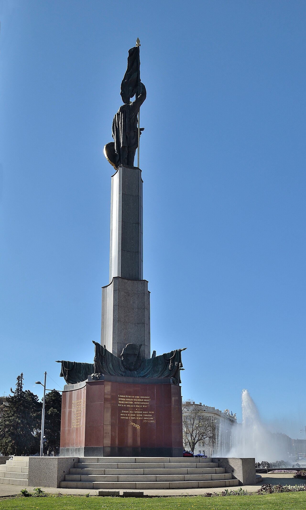
광장 정면(케른트너 거리 쪽)에서 보면 분수 물줄기 뒤로 병사상과 반원형 콜로네이드가 한 컷에 겹쳐 들어옵니다. 분수가 켜지는 낮 시간에 이 정면 구도를 노리면 사진이 가장 잘 나옵니다.
잠깐, "1955년 국가조약"이 뭔가요?
2차대전 후 오스트리아는 미국·소련·영국·프랑스 4개국에 의해 10년간 분할 점령되어 있었습니다. 1955년 5월 15일, 이 4개국과 오스트리아가 오스트리아 국가조약에 서명하면서 점령이 끝나고 오스트리아는 다시 주권 독립국이 되었습니다. 흥미롭게도 이 조약이 서명된 장소가 바로 앞서 본 상부 벨베데레 궁전입니다. 외무장관 레오폴트 피글이 발코니에서 조약을 들어 보이며 외친 "오스트리아는 자유다!(Österreich ist frei!)"는 지금도 회자됩니다.
그 조약의 여러 조항 중 제19조가 "연합국 군대의 묘지와 기념비를 존중·보존·관리한다"는 내용이라, 빈을 해방·점령했던 붉은군대의 이 기념비도 그 대상이 된 것입니다.
호프부르크 & 헬덴광장
제국의 겨울 궁전, 그리고 네 장군 중 둘이 말 위에 선 "영웅 광장".
합스부르크의 겨울 궁전
호프부르크는 빈 도심 한복판에 자리한 합스부르크 황실의 겨울 거처로, 600여 년에 걸쳐 증축을 거듭한 거대한 복합 건물군입니다. 그 앞에 넓게 트인 광장이 바로 헬덴광장(Heldenplatz), 즉 "영웅 광장"입니다.
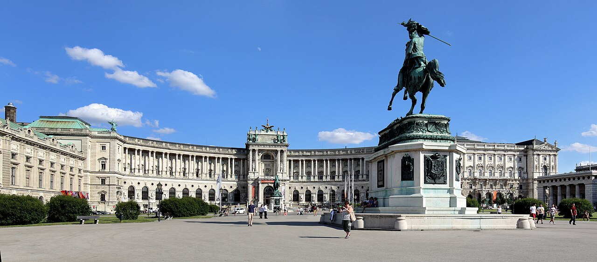
말 위의 두 영웅 — 오이겐 공과 카를 대공
인트로의 "4대 장군"을 기억하시나요? 그중 두 명이 헬덴광장에 거대한 기마상으로 마주 서 있습니다. 둘 다 조각가 안톤 도미니크 페른코른의 작품입니다.
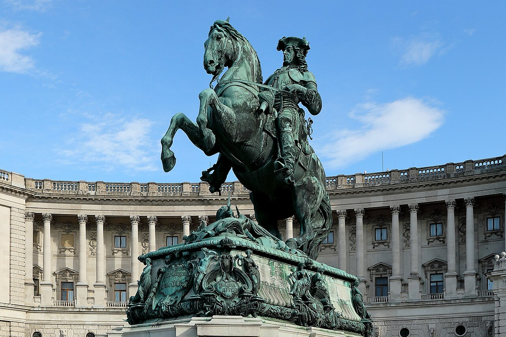
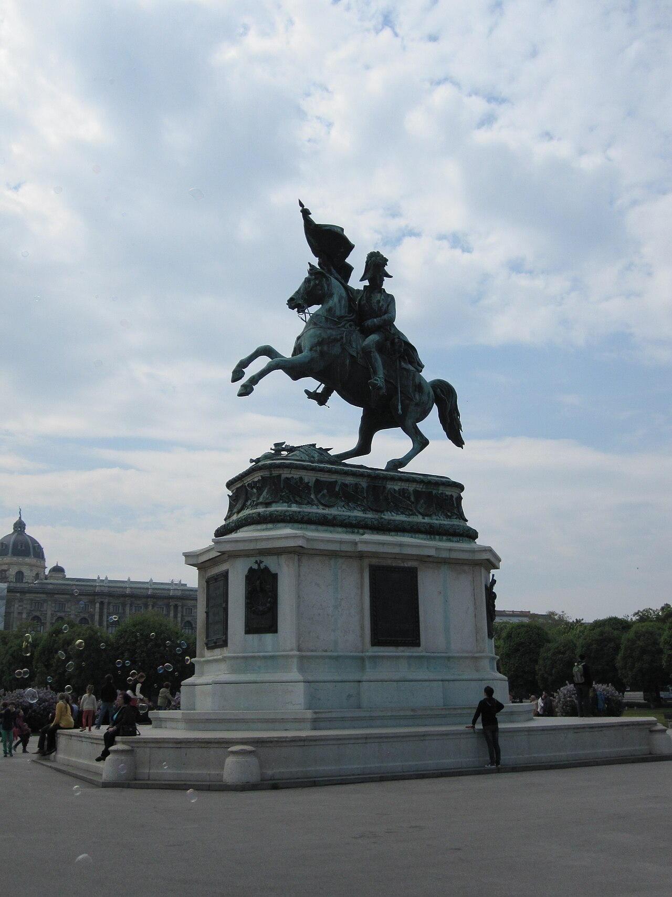
말의 다리를 세어 보세요. 카를 대공 기마상은 받침대에 닿는 지점이 뒷다리 두 개뿐입니다. 앞다리를 번쩍 치켜든 역동적인 자세를 단 두 다리만으로 지탱한, 당시로서는 쉽지 않은 19세기 조각 기술의 자랑거리입니다. (옆에 나란히 선 오이겐 공 기마상과 비교해 보면 차이가 보입니다.)
1938년, 헬덴광장의 그늘
이 광장은 영광만 간직한 곳이 아닙니다. 1938년 3월, 아돌프 히틀러가 노이에 호프부르크 발코니에서 오스트리아의 독일 병합(안슐루스)을 선언했고, 광장은 운집한 군중으로 가득 찼습니다. "영웅 광장"이라는 이름과 이 역사가 겹치면서, 오늘날 헬덴광장은 오스트리아가 자신의 과거를 어떻게 기억할 것인가를 묻는 성찰의 공간이기도 합니다.
나머지 두 장군(슈바르첸베르크·라데츠키)과 라데츠키 행진곡 이야기는 인트로 탭에서.